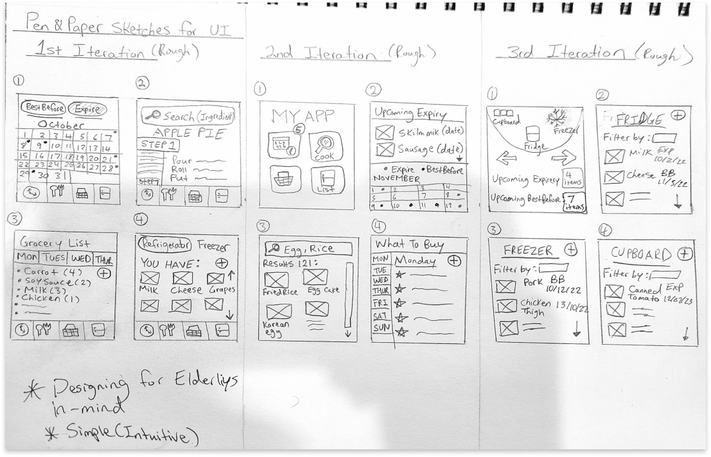

In my Interface Design course (IAT 334), FRIJ was designed to enhance the home grocery experience. FRIJ enables users to effortlessly scan, track, and organize their purchased groceries, while also offering personalized recipe suggestions based on their available ingredients.
Designed a tool to reduce food waste by alerting users about expiring groceries. FRIJ also aims to enhance grocery management for the elderly and those who seek streamlined tracking and organization through the app
User Research
UI/UX
About 6 Weeks (40 days)
Team Project - Jack Luo, Alex Luowan, Ethan Allwood, Maxwell Chen
Seniors with physical or cognitive limitations who need assistance planning meals / nutrition.
To gain an understanding of our target audience, we conducted both primary and secondary research. This research provided us with a few key insights to help understand the problem space and start developing solutions.
How might we empower seniors and boost their confidence when it comes to cooking and providing for themselves?
How might we enable elderly users to conveniently get their groceries?
How might we enable seniors to effectively track and remember details about what food and ingredients they have?
1. An app that suggests recipes based on the ingredients the user already has
2. An app that tracks and reminds the user about expiry dates of their food
3. A recipe app that aims to help the user easily acquire the ingredients they need
In the second week, we brainstormed ideas to enhance the user experience. We crafted an interaction framework that mapped out how users would navigate the app. This provided a solid foundation for the design phase.
Week three was dedicated to crafting the interactions that would guide users through FRIJ's features. We focused on creating seamless transitions and intuitive elements to enhance usability.
Building upon our interaction designs, we developed an interactive prototype of FRIJ. This allowed us to simulate the user journey and gather early feedback to refine our concepts.
During week five, we conducted usability testing on our interactive prototype. Based on user feedback, we iterated on our proposal and made refinements to further align with users' needs.
In the final week, we synthesized all our efforts into a polished and cohesive design. We finalized the visual elements, user flows, and interaction details to deliver a comprehensive user experience.
Produced by: Ethan Allwood | Voiced by: Maxwell Chen | Starring: Jack Luo & Alex Luowan
Working on the FRIJ grocery app was both invigorating and enlightening, marking my longest project to date. The project's multidisciplinary challenges were captivating, especially the task of accommodating a wide user demographic, spanning from teens to the elderly. This experience emphasized the paramount importance of inclusivity and accessibility, urging me to meticulously consider every design facet.
The project also underscored the intricate nature of designing novel solutions, requiring unwavering commitment throughout research, ideation, and testing phases. The lessons learned from FRIJ will undoubtedly resonate in my future projects, ensuring a continuous dedication to user-centric and impactful design.
Designing is never finished, so my next steps would be to: